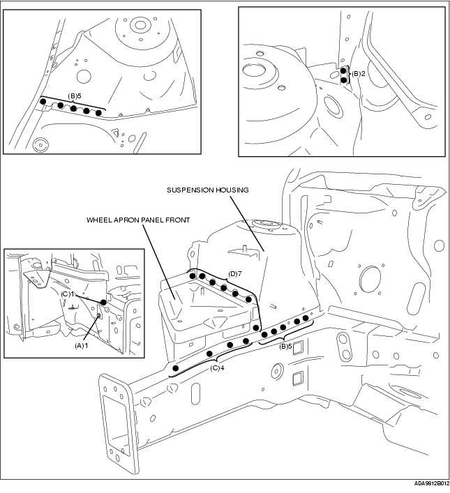

Wheel apron panel assembly removal
LH
1. Drill the 12 weld locations indicated by (A), and 3 weld locations indicated by (B), remove the wheel apron panel assembly.
- • If removing the wheel apron panel front and the suspension housing separately as separate parts, drill 3 locations indicated by (B) and drill 7 locations indicated by (C).

RH
1. Remove the bolt from location (A).
2. Drill the 12 weld locations indicated by (B) and 5 weld locations indicated by (C), then remove the wheel apron panel assembly.
- • If removing the wheel apron panel front and the suspension housing separately as separate parts, drill 5 locations indicated by (C) and drill 7 locations indicated by (D).
